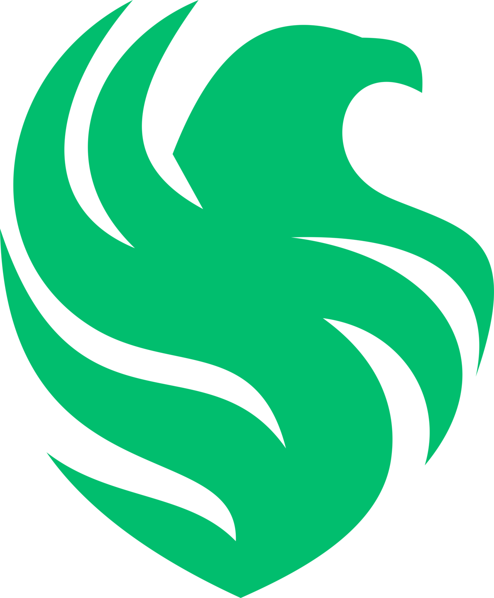

Состав победителей самого маштабного турнира по CS2 Major 2026
m0nes1
Team Falcons — команда с большим потенциалом и амбициями. В будущем коллектив может значительно улучшить командное взаимодействие, стабильность на крупных турнирах и индивидуальную форму игроков. Особое внимание может быть уделено развитию тактического разнообразия, улучшению коммуникации и подготовке к соперникам. Если команда продолжит усердно тренироваться и совершенствовать свою игру, у нее есть хорошие шансы закрепиться среди сильнейших коллективов мира и регулярно бороться за чемпионские титулы на крупнейших турнирах по Counter-Strike 2.
Team Falcons продолжает работать над взаимодействием между игроками. Более четкая коммуникация, совместные тренировки и разбор матчей помогут команде действовать увереннее в напряженных ситуациях и принимать правильные решения.
Для достижения высоких результатов команда может расширить свой набор стратегий. Новые тактики, нестандартные заготовки и разнообразные игровые стили сделают Team Falcons менее предсказуемой для соперников.
Одной из главных целей Team Falcons является стабильное выступление на международных соревнованиях. Регулярная практика, работа над индивидуальной формой игроков и анализ ошибок помогут команде чаще бороться за призовые места и чемпионские титулы.
У Team Falcons есть сильные игроки и хорошие индивидуальные навыки. Если команда станет действовать более слаженно и уменьшит количество ошибок в ключевых раундах, она сможет стабильно конкурировать с лучшими составами мира.
Самое важное для Falcons — сохранять спокойствие под давлением. Когда игроки доверяют друг другу и придерживаются своего плана, результаты становятся гораздо лучше.
У Falcons высокий потенциал, но для побед на крупнейших турнирах важна стабильность. Если команда продолжит развивать командную игру и уверенно проводить решающие карты, она сможет претендовать на самые высокие места.
А что думаешь об этом ты?